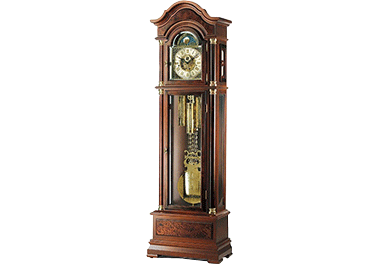

熱門商品
咕咕鐘
老爺鐘
電子鐘
桌鐘
壁鐘
其他
黑森林咕咕鐘
布穀鳥鐘（德語：Kuckucksuhr），產自德國黑森林地區。
內部有設計精巧的齒輪裝置，每到半點和整點，鐘上方的小木門就會自動打開，出現一個會報時的的布穀鳥，發出悅耳的「咕咕」的叫聲。因此，也稱作咕咕鐘。
布穀鳥鐘是德國西南部黑森林地區的特產
世界聞名的藝術品，工藝精緻厚道
內部設計有精巧的機械式齒輪裝置
每到半點和整點，鐘上方的小木門自動打開，出現一個會報時的布穀鳥
款式多樣、風格各異
機械式咕咕鐘在它的內部，會裝載一個瑞士音樂盒
- 日銓企業有限公司
- 24251新北市新莊區新北大道四段189號5樓
- AM11:00 - PM20:00 星期日彈性，但要事先預約
- Email:info@perfsun.com
- (02)8521-7330 / (02)8521-7331
- (02)8521-7335
© design by 2019
building only for personal site project work